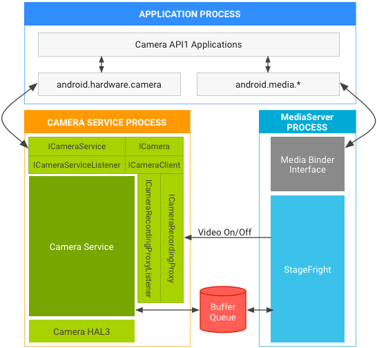
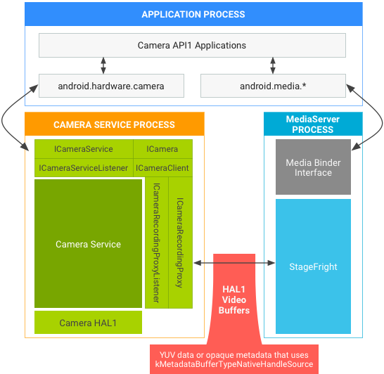
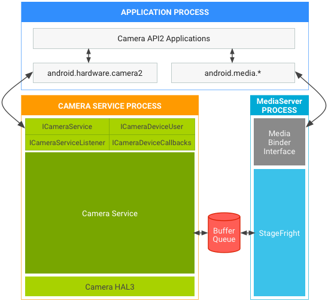

This page details version differences in Camera HALs, APIs, and associated Android Compatibility Test Suite (CTS) tests. It also covers several architectural changes made to harden and secure the camera framework in Android 7.0 and the updates vendors must make to support these changes in their camera implementations.
The following terms are used on this page:
android.hardware.Camera class. android.hardware.camera2 package.Android includes the following camera APIs.
Android 5.0 deprecated Camera API1, which continues to be phased out as new platform development focuses on Camera API2. However, the phase-out period will be lengthy, and Android releases will continue to support Camera API1 apps for some time. Specifically, support continues for:
The Camera API2 framework exposes lower-level camera control to the app, including efficient zero-copy burst/streaming flows and per-frame controls of exposure, gain, white balance gains, color conversion, denoising, sharpening, and more. For details, watch the Google I/O video overview.
Android 5.0 and later includes Camera API2; however, devices running Android
5.0 and later may not support all Camera API2 features. The
android.info.supportedHardwareLevel property that apps can query
through the Camera API2 interfaces reports one of the following support
levels:
LEGACY. These devices expose capabilities to apps through the
Camera API2 interfaces that are approximately the same capabilities as those
exposed to apps through the Camera API1 interfaces. The legacy frameworks code
conceptually translates Camera API2 calls into Camera API1 calls; legacy devices
do not support Camera API2 features such as per-frame controls.FULL. These devices support all of major capabilities of Camera
API2 and must use Camera HAL 3.2 or later and Android 5.0 or later.LIMITED. These devices support some Camera API2 capabilities
(but not all) and must use Camera HAL 3.2 or later.Individual capabilities are exposed via the
android.request.availableCapabilities property in the Camera API2
interfaces. FULL devices require the MANUAL_SENSOR and
MANUAL_POST_PROCESSING capabilities, among others. The
RAW capability is optional even for FULL devices.
LIMITED devices can advertise any subset of these capabilities,
including none of them. However, the BACKWARD_COMPATIBLE capability
must always be defined.
The supported hardware level of the device, as well as the specific Camera API2 capabilities it supports, are available as the following feature flags to allow Google Play filtering of Camera API2 camera apps.
android.hardware.camera.hardware_level.full
android.hardware.camera.capability.raw
android.hardware.camera.capability.manual_sensor
android.hardware.camera.capability.manual_post_processing
Devices running Android 5.0 and later must pass the Camera API1 CTS, Camera API2 CTS, and CTS Verifier camera tests.
Devices that do not feature a Camera HAL3.2 implementation and are not
capable of supporting the full Camera API2 interfaces must still pass the Camera
API2 CTS tests. However, the device will be running in Camera API2
LEGACY mode (in which the Camera API2 calls are conceptually mapped
to Camera API1 calls) so any Camera API2 CTS tests related to features or
capabilities beyond Camera API1 will be automatically skipped.
On legacy devices, Camera API2 CTS tests that are not skipped use the existing public Camera API1 interfaces and capabilities with no new requirements. Bugs that are exposed (and which cause a Camera API2 CTS failure) are bugs already present in the device’s existing Camera HAL, and thus would be found by existing Camera API1 apps. We do not expect many bugs of this nature (however, any such bugs must be fixed to pass the Camera API2 CTS tests).
To harden media and camera framework security, Android 7.0 moves camera service out of mediaserver. Vendors may need to make changes in the camera HAL depending on the API and HAL versions in use. The following sections detail architectural changes in AP1 and AP2 for HAL1 and HAL3, as well as general requirements.
API1 video recording may assume camera and video encoder live in the same process. When using API1 on:

Figure 1. Android 7.0 camera and media stack in API1 on HAL3.
kMetadataBufferTypeCameraSource is no longer supported in Android
7.0.)

Figure 2. Android 7.0 camera and media stack in API1 on HAL1.
For API2 on HAL1 or HAL3, BufferQueue passes buffers so those paths continue to work. The Android 7.0 architecture for API2 on:

Figure 3. Android 7.0 camera and media stack in API2 on HAL3.
The architectural changes made for hardening media and camera framework security include the following additional device requirements.
android.hardware.camera2.cts.PerformanceTest and the Google Camera
App for 120/240 FPS high speed video recording. Devices also require a small
amount of additional RAM to create the new process.kMetadataBufferTypeNativeHandleSource as the metadata buffer
type and pass VideoNativeHandleMetadata in video buffers.
(kMetadataBufferTypeCameraSource is no longer supported on Android
7.0.) With VideoNativeHandleMetadata, camera and media frameworks
are able to pass the video buffers between processes by serializing and
deserializing the native handles properly.For all devices that include a camera and run Android 7.0, verify the implementation by running Android 7.0 CTS. Although Android 7.0 does not include new CTS tests that verify camera service changes, existing CTS tests will fail if you have not made the updates indicated above.
For a list of tests available for evaluating the Android Camera HAL, see the Camera HAL Testing Checklist.
Minor additions to supported metadata and changes to data_space support:
ANDROID_SENSOR_OPAQUE_RAW_SIZE static metadata as mandatory
if RAW_OPAQUE format is supported.ANDROID_CONTROL_POST_RAW_SENSITIVITY_BOOST_RANGE static
metadata as mandatory if any RAW format is supported.camera3_stream_t data_space field to a more flexible
definition, using the version 0 definition of dataspace encoding.ANDROID_INFO_SUPPORTED_HARDWARE_LEVEL_3
ANDROID_CONTROL_POST_RAW_SENSITIVITY_BOOSTANDROID_CONTROL_POST_RAW_SENSITIVITY_BOOST_RANGEANDROID_SENSOR_DYNAMIC_BLACK_LEVELANDROID_SENSOR_DYNAMIC_WHITE_LEVELANDROID_SENSOR_OPAQUE_RAW_SIZEANDROID_SENSOR_OPTICAL_BLACK_REGIONSMinor revision of expanded-capability HAL:
data_space field to
camera3_stream_t.camera3_stream_t.camera3_stream_configuration_t.Minor revision of expanded-capability HAL:
get_metadata_vendor_tag_ops. Use
get_vendor_tag_ops in camera_common.h instead.register_stream_buffers. All gralloc buffers
provided by framework to HAL in process_capture_request may be new
at any time.process_capture_result may be
called multiple times with a subset of the available results before the full
result is available.camera3_request_template. Applications
may use this template to control the capture settings directly.process_capture_result instead of
process_capture_request.Minor revision of expanded-capability HAL:
configure_streams passes consumer usage flags to the HAL.First revision of expanded-capability HAL:
initialize() call.Initial release of expanded-capability HAL (Android 4.2) [camera2.h]:
android.hardware.Camera
API.Initial Android camera HAL (Android 4.0) [camera.h]:
android.hardware.Camera API.This section contains module versioning information for the Camera hardware
module, based on camera_module_t.common.module_api_version. The two
most significant hex digits represent the major version, and the two least
significant represent the minor version.
This camera module version adds the following API changes:
open() is called to open a camera device, the camera HAL module
must notify the framework through the torch mode status callback that the torch
mode has been turned off.CAMERA_DEVICE_STATUS_PRESENT. The framework counts solely on
device status change callbacks to manage the available external camera list.
resource_cost and
conflicting_devices fields should always be set in the
camera_info structure returned by the get_camera_info
call.This camera module version adds open legacy camera HAL device support.
The framework can use it to open the camera device as lower device HAL version
HAL device if the same device can support multiple device API versions.
The standard hardware module open call (common.methods->open) continues
to open the camera device with the latest supported version, which is
also the version listed in camera_info_t.device_version.
This camera module version adds vendor tag support from the module, and
deprecates the old vendor_tag_query_ops that were previously only
accessible with a device open.
This camera module version adds support for asynchronous callbacks to the
framework from the camera HAL module, which is used to notify the framework
about changes to the camera module state. Modules that provide a valid
set_callbacks() method must report at least this version number.
Camera modules that report this version number implement the second version
of the camera module HAL interface. Camera devices openable through this
module may support either version 1.0 or version 2.0 of the camera device
HAL interface. The device_version field of camera_info is always
valid; the static_camera_characteristics field of
camera_info is valid if the device_version field is
2.0 or higher.
Camera modules that report these version numbers implement the initial
camera module HAL interface. All camera devices openable through this
module support only version 1 of the camera device HAL. The
device_version and static_camera_characteristics
fields of camera_info are not valid. Only the
android.hardware.Camera API can be supported by this module and its
devices.